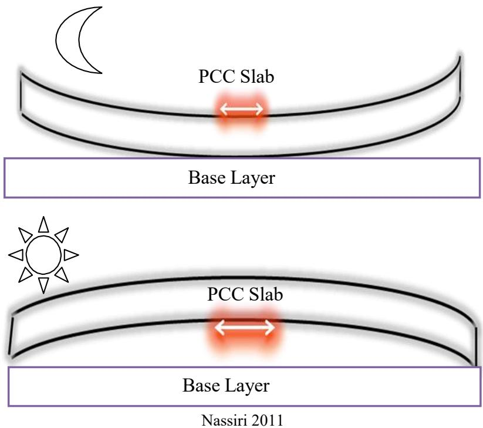
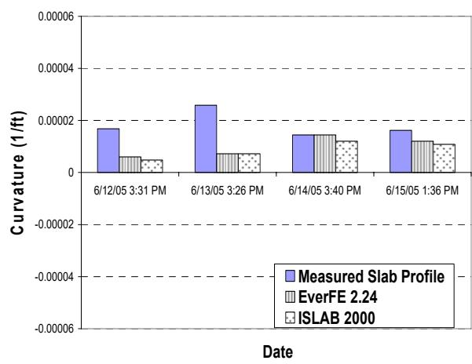
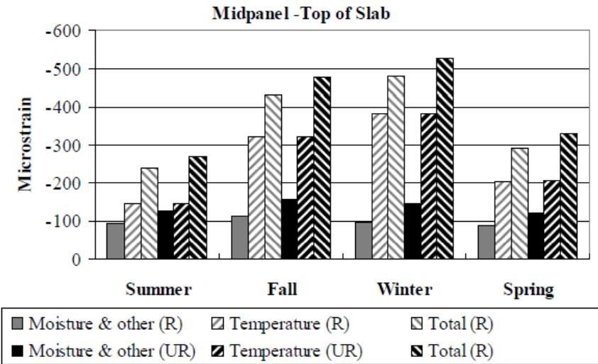
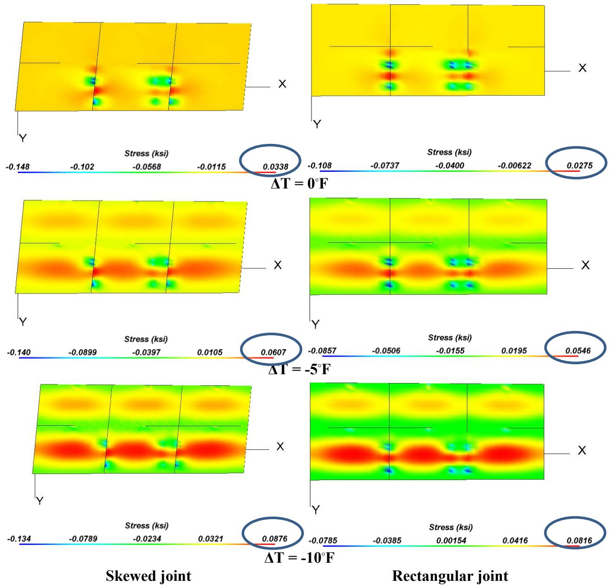
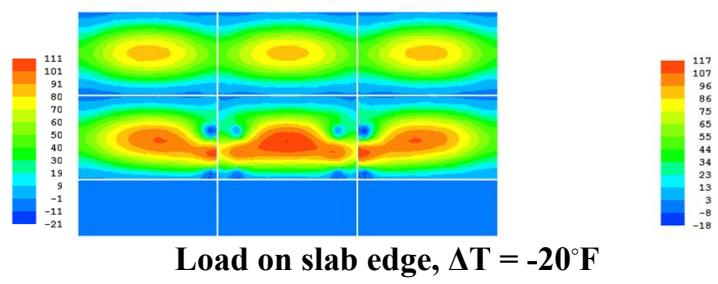

Pavement Curling
Pavement curling is the out-of-plane bending deformation of concrete slabs that manifests as upward or downward curvature, primarily occurring at slab edges and corners. This phenomenon arises when non-uniform temperature or moisture gradients develop through the slab thickness, causing one surface to expand or shrink more than the opposite side [2] [3] [4] [6]. The resulting differential expansion generates internal tensile and compressive stresses that produce curvature, with warmer tops typically causing downward curling and cooler tops leading to upward curling [1] [2] [3] [9] [10]. The magnitude of this deformation is governed by slab geometry, material properties such as aggregate thermal expansion, and environmental conditions including drying rates and ambient temperature cycles [4] [6] [12].
Sources (14)
Key findings
- Pavement curling creates substantial scatter in back-calculated concrete slab moduli, making EPCC estimates unreliable unless test timing and ambient conditions are explicitly accounted for during FWD analysis [11].
- Early-age pavement curling is driven by a combination of environmental factors including moisture variation, drying shrinkage, wind, and placement temperature, rather than temperature gradients alone [2].
- Non-uniform temperature gradients through the slab depth generate differential strain responses that result in upward curvature when the lower portion is warmer than the top [6].
- Ambient temperature and mix design significantly influence built-in curling, with higher cement content increasing upward curl while greater fly-ash replacement mitigates it [1].
- Skewed joints enlarge slab dimensions and markedly raise curling-and-warping stresses compared with rectangular joints, thereby increasing the likelihood of longitudinal cracking [9].
- Internal curing with lightweight fine aggregate lowered temperature-moisture differentials in the concrete, leading to a pronounced reduction in slab warping and curling [13].
- Curling intensity declines as the total equivalent temperature difference approaches zero, with curvature and deflection indicators trending toward zero near a 0 °F differential [4].
- Seasonal variations strongly affect curling metrics, with fall yielding the highest average curvature IRI values while spring and summer show the lowest [4].
Early-Age Pavement Curling Mechanisms and Mitigation
Pavement curling is the out-of-plane bending deformation of concrete slabs caused by non-uniform temperature or moisture gradients through the slab thickness, which generate differential expansion and contraction [2] [3] [4] [6] [9] [10]. These gradients induce internal tensile and compressive stresses that cause the slab edges or corners to lift upward when the bottom is warmer than the top, or curl downward when the surface is warmer [2] [3] [4] [6] [9] [13]. The phenomenon is most pronounced during early age when concrete strength is still developing and the slab is subject to rapid diurnal temperature cycles or differential drying shrinkage [2] [5] [6] [10]. Mitigation strategies focus on controlling material properties, such as selecting aggregates with low thermal expansion coefficients, and implementing uniform curing practices to minimize moisture differentials [2] [6].
The figure below illustrates the curling and warping behavior of concrete pavement slabs.
 Curling and warping behavior of concrete pavement slabs [10]
Curling and warping behavior of concrete pavement slabs [10]
The figure illustrates the diurnal deformation cycle of a Jointed Plain Concrete Pavement (JPCP) slab resting on a pavement base. Under solar radiation, the top surface becomes warmer and wetter than the bottom, causing the slab to curl downward with expansion occurring at the top layer. Conversely, under cooler conditions, the top surface becomes drier and cooler than the base, resulting in upward curling where contraction occurs at the top.
Research problem — Early-age temperature and moisture gradients induce tensile stresses that cause slab curling, warping, and cracking, which compromise structural integrity, safety, and service life [5] [6]. These deformations degrade initial pavement smoothness, leading to reduced ride quality, accelerated deterioration, and financial penalties due to non-compliance with specification limits [2] [3] [14]. The governing design, material, and environmental variables are not yet well quantified, creating a need for standardized measurement methods and effective mitigation strategies such as internal curing or fiber reinforcement to control deformation [1] [8] [12] [13].
The following figure illustrates the specific stress distributions that develop within a concrete slab as it undergoes upward or downward curling.

Stresses exerted due to PCC curling and warping: tensile stress exerted at the top of the PCC slab with upward curvature (top), and tensile stress exerted at the bottom of the PCC slab with downward curvature (bottom) [6]The figure displays two diagrams illustrating a concrete pavement structure consisting of a ‘PCC Slab’ resting on a ‘Base Layer’. The top diagram depicts upward curvature under a moon symbol, with a red zone indicating tensile stress at the slab’s top surface. The bottom diagram shows downward curvature under a sun symbol, with a red zone indicating tensile stress at the slab’s bottom surface. This visualizes how non-uniform temperature gradients induce differential strain response throughout the slab depth to produce curvature.
State of the art — The current state of the art for assessing early-age pavement curling integrates mechanistic-empirical design frameworks, such as the AASHTO Mechanistic-Empirical Pavement Design Guide (MEPDG), with advanced finite-element modeling tools like HIPERPAV and EverFE to predict temperature- and moisture-induced stresses [1] [2] [5]. Mitigation strategies have evolved from traditional material selection and construction timing controls to the adoption of internally cured concrete using saturated lightweight fine aggregate, which significantly reduces shrinkage and moisture gradients [6] [8] [13] [14]. Field assessment practices now rely on high-resolution instrumentation, including embedded sensor networks for real-time gradient monitoring and high-speed inertial profiling combined with second-order polynomial fitting algorithms to quantify slab curvature [2] [4] [10] [13].
The following figure illustrates how permanent curling and warping temperature differences influence MEPDG performance predictions for an I-80 jointed plain concrete pavement site.
 Effect of permanent curling and warping temperature difference on MEPDG performance predictions for I-80 JPCP site: faulting (top left), transverse cracking (top right), and IRI (bottom) [1]
Effect of permanent curling and warping temperature difference on MEPDG performance predictions for I-80 JPCP site: faulting (top left), transverse cracking (top right), and IRI (bottom) [1]
The figure displays a bar chart comparing National and Local pavement roughness, measured as International Roughness Index (IRI) in inches per mile, across various permanent curling temperature differences. A red horizontal line indicates the MEPDG default threshold for IRI performance.
Findings from the reports
- Simulations demonstrated that thermal-moisture stresses remained below early-age concrete strength during the first three days, predicting no curling-related cracking within that period [5].
- Field studies showed that slab curvature is driven primarily by daily temperature gradients through the slab thickness, with downward curl occurring when the top surface is warmer and upward curl when the bottom is warmer [2].
- Measurements revealed that early-age pavement curling results from a combination of environmental factors including moisture variation, drying shrinkage, wind, and construction-time temperature conditions rather than temperature gradients alone [2].
- Instrumented slabs exhibited upward curling driven by temperature differentials, producing opposite strain signs across the slab depth with tensile strains at the top surface and compressive strains at the bottom [6].
- LiDAR surveys consistently recorded upward curling at all sites, with diagonal directions often exhibiting the greatest curvature magnitude compared to longitudinal or transverse deflections [1].
- Field observations linked higher magnitudes of upward curling, particularly along diagonals, to poorer pavement performance characterized by lower Pavement Condition Index values and higher International Roughness Index scores [1].
- Mix design analysis showed that slabs with higher cement content and lower fly-ash replacement exhibited more upward curling, while reduced cement and greater fly-ash mitigated this effect [1].
- Performance reviews found that concrete overlays are inherently more prone to curling and warping than full-depth slabs due to their larger surface-to-volume ratio leading to greater water loss during construction [12].
- LiDAR measurements demonstrated that internally cured concrete slabs exhibited markedly less curling and warping than conventional control slabs under comparable temperature-moisture gradients [13].
- Internal curing with lightweight fine aggregate increased hydration and lowered temperature-moisture differentials, which led to a pronounced reduction in slab warping and curling [13].
- Investigations showed that pavement curling intensity declines as the total equivalent temperature difference approaches zero, with curvature-related IRI and deflection indicators converging to zero near a zero differential [4].
- Statistical analysis confirmed that quality-management concrete mixes produce significantly less curling than other mix types, while high-strength mixes generate the greatest curling among observed sections [4].
- Geometric evaluations revealed that rectangular slabs with tied concrete shoulders markedly reduce deformation compared with skewed joints or untied shoulders [4].
- Seasonal assessments indicated that fall yields the highest curling levels across all indicators, while spring and summer show the lowest values [4].
- Field investigations found that incorporating fibers into concrete overlays did not produce a measurable change in pavement curling or warping compared to non-fibrous sections [10].
- The study concluded that neither adding synthetic macro-fibers nor altering overlay thickness produced a measurable change in pavement curling and warping for the examined concrete overlays [10].
- Field documentation showed that early-age slab curvature follows predictable diurnal patterns, with upward curl peaking in pre-sunrise hours and downward curl peaking around noon [3].
Novelty & rigor — The research introduces computational frameworks that couple detailed early-age simulation with measured maturity data to quantify thermal-moisture stresses in blended cement pavements, offering a season-specific risk assessment distinct from conventional strength-only checks [5]. A distinctive Early-Frequent-Detailed monitoring scheme integrates intensive field instrumentation with high-resolution profiling and calibrated finite-element modeling to capture the real-time evolution of slab curvature and joint movement during critical early-age periods [2] [3]. Innovative applications of embedded wireless MEMS sensors and terrestrial LiDAR scanning provide continuous, non-contact quantification of depth-dependent gradients and full-slab three-dimensional curvature, enabling precise tracking of curling behavior that surpasses traditional single-line measurement techniques [1] [6]. The methodology is further distinguished by automated data-processing algorithms that extract comprehensive curvature indicators from high-speed inertial profiler data, allowing for the systematic isolation and quantification of built-in curling effects across diverse seasonal and material conditions [4] [10].
The following figure illustrates the comparison between measured and finite-element-predicted slab curvature profiles at the Burlington site during morning paving.

Comparison of measured and finite-element predicted slab curvature profiles at the Burlington site. [2]This visualization directly supports the concept of pavement curling by showing the magnitude and direction (positive or negative) of out-of-plane bending deformation over time.
Reported values
| Parameter | Value | Context | Source |
|---|---|---|---|
| diagonal relative deflection | -48.7 to +22.7 mils | field investigation (general) | [1] |
| longitudinal relative deflection | -22.2 to -9.2 mils | field investigation (general) | [1] |
| longitudinal relative deflection | -9.8 to -3.4 mils | field investigation (general) | [1] |
| time to upward warping | 2 day | early-age pavement curling/warping due to moisture differences (higher moisture at bottom) | [2] |
| average curvature IRI | 109.2 in./mile | fall season | [4] |
| permanent effective curling/warping temperature difference (default) | -10°F | PMED default assumption validated by study results | [4] |
| slab thickness | 8 in. | LTPP sections, highest curling and warping behavior | [4] |
| stress-strength difference | 6.2 psi | spring seasonal temperature profile | [5] |
| compressive microstrain | 200 | bottom of the concrete (Strain Gage 3) when curled upward | [6] |
| concrete temperature (bottom) | 65°F | bottom of the concrete | [6] |
| Curvature IRI range | < 10 in./mi | across all six measurements at most concrete overlay test sites | [10] |
| joint spacing | 5.5 to 6 ft | overlays with shorter joint spacing designs | [10] |
| slab size | 12-ft | concrete overlay slab with skewed joint pattern | [12] |
| maximum movement | 0.9 mm | internally cured (IC) section in Washington County during Winter morning | [13] |
| maximum movement | 2.2 mm | conventional control (CC) section in Washington County during Winter morning | [13] |
The following figure illustrates strain measurements associated with pavement curling and warping.
 Strain measurement: curling and warping [6]
Strain measurement: curling and warping [6]
The figure displays a time-series plot of microstrain measurements recorded at different locations on a concrete slab, including the mid-span edge and slab corners. The data reveals cyclic fluctuations in strain that correspond to upward or downward curvature of the pavement surface due to environmental gradients.
5 more distinct values omitted here; the full span-verified set is in the quantities sidecar.
Across the reviewed reports, early-age pavement curling is collectively established as a phenomenon driven by non-uniform temperature and moisture gradients through the slab depth, which generate differential strains that produce measurable upward or downward curvature depending on whether the bottom or top surface is warmer. While thermal differentials are a primary driver, the reports converge on the finding that moisture variation and drying shrinkage significantly contribute to slab curvature, with internal curing methods shown to reduce these gradients and mitigate warping compared to conventional mixes. The studies further indicate that mix design parameters, such as cement content and the use of quality-management concrete, along with geometric factors like slab width and shoulder configuration, exert strong influence on curling magnitude, whereas fiber reinforcement was found to have no measurable impact on deformation. [1] [2] [4] [6] [10] [13]
The figure below illustrates a fitted profile used to characterize this concrete slab curling and warping.
 Fitted profile to characterize concrete slab curling/warping [10]
Fitted profile to characterize concrete slab curling/warping [10]
The figure displays a cross-sectional elevation profile of a concrete surface, characterized by high-frequency roughness superimposed on a smooth, U-shaped curvature.
Implications — Practitioners must manage both temperature and moisture dynamics during early-age curing to prevent curvature that degrades smoothness, as relying on temperature control alone is insufficient [2]. Design specifications should incorporate low-coefficient of thermal expansion aggregates and mix designs that reduce shrinkage to mitigate the tensile stresses that lead to premature cracking [1] [13]. Geometric design choices, such as slab thickness and joint spacing, must be optimized alongside bond management with underlying layers to control curl-induced stresses in overlays where fibers are ineffective [10] [12].
The seasonal variations in these stresses are illustrated in the following figure.

Seasonal contributions to the degree of curling and warping in restrained and unrestrained slabs. [1]The figure displays a bar chart comparing microstrain measurements at the midpanel top of concrete slabs across four seasons (Summer, Fall, Winter, Spring) for both restrained (R) and unrestrained (UR) conditions. The data indicates that temperature-induced strain is the dominant factor contributing to total strain, with higher measurements observed in winter due to greater slab contraction resulting from ambient temperature drops. These results demonstrate that while moisture-related strains peak in fall, the overall degree of curling and warping can be higher in winter than other seasons.
Limitations — The reliance on a small number of pilot sites and the absence of traffic loading during early-age monitoring render preliminary trends regarding paving time effects inconclusive [2]. Poor sensor survivability due to environmental harshness and construction vibrations prevents reliable long-term assessment of moisture profiles and strain records necessary for interpreting curl behavior [6]. Measurement techniques introduce bias through underestimation by inertial profilers, while statistical models suffer from weak predictive power due to limited data points and unaccounted gradients [4] [13].
Evidence: 12 reports (9 primary)
Structural Consequences of Pavement Curling
Research problem — Temperature-induced curvature of rigid concrete slabs introduces significant scatter in falling-weight deflectometer measurements, which corrupts backcalculated elastic modulus values and leads to inaccurate assessments of layer stiffness [11]. Built-in slab curling reduces edge support at transverse joints and generates high tensile stresses under traffic loading, which can initiate sudden longitudinal cracking and compromise structural integrity [9].
State of the art — Current practice acknowledges that slab curling significantly influences deflection measurements, necessitating consistent testing schedules and the use of artificial neural network backcalculation models trained with noisy data to robustly infer structural properties [11]. Mitigation strategies have shifted from widened panels toward rectangular joint layouts with tied shoulders, as advanced finite-element modeling reveals that skewed joints on wider slabs can amplify curling stresses at corners and lead to longitudinal cracking [9]. While tools like ISLAB 2005 and EverFE 2.25 allow for detailed simulation of thermal-mechanical interactions, field data have not yet established a definitive quantitative link between specific material parameters and curl-related cracking, leaving this as an active research area [9].
The figure below illustrates how these skewed versus rectangular joint configurations affect top tensile stress distributions under varying thermal conditions.

Comparisons of top tensile stress distributions between skewed and rectangular jointed widened slabs for three temperature load scenarios. [9]The figure displays finite element analysis results comparing the distribution of top tensile stresses in concrete slabs with skewed joints versus those with rectangular joints under varying thermal gradients. As temperature drops, indicated by delta T values of -5 and -10 degrees Fahrenheit, the stress contours show that skewed jointed widened slabs produce higher top tensile stresses compared to rectangular jointed widened slabs. This amplification of stress at the joints due to skewed geometry increases the potential for top-down longitudinal cracking, a failure mode driven by slab curling.
Findings from the reports
- Pavement curling creates substantial scatter in back-calculated concrete slab moduli, rendering EPCC estimates unreliable unless test timing and ambient conditions are explicitly accounted for [11].
- FWD data collected early in the morning reduces curling effects caused by thermal gradients, thereby improving the reliability of back-calculated pavement parameters [11].
- Negative temperature gradients significantly raise top-to-bottom tensile stress ratios, which amplifies the potential for longitudinal cracking in concrete slabs [9].
- Skewed joint configurations enlarge slab dimensions and markedly increase curling-and-warping stresses compared with rectangular joints, thereby increasing the likelihood of longitudinal cracking [9].
- Loading configurations that place axle loads near slab edges generate the highest tensile stress ratios, highlighting the combined effect of load positioning and curling on crack initiation [9].
Novelty & rigor — The research introduces a systematic quantification of how negative temperature gradients interact with specific truck loading configurations to trigger top-down longitudinal cracks in widened jointed plain concrete pavement slabs [9]. This approach is distinctive for employing detailed finite-element parametric studies that vary axle spacing, wander distance, and thermal gradients to capture tensile stress transfer between adjacent slabs during curling events [9]. The methodology ensures reproducibility by specifying the use of established three-dimensional pavement analysis software with defined geometric parameters, load configurations, and temperature profiles derived from recognized industry guidelines [9].
The figure below illustrates the resulting top tensile stress distribution in a granular shoulder with a regular size slab under four distinct temperature load cases.

Top tensile stress distribution for a widened slab under edge loading with a temperature gradient of -20°F. [9]The figure displays finite-element analysis results showing the top tensile stress distribution on concrete slabs subjected to mechanical loads and negative temperature gradients. The image shows that the stress concentration is highest at the slab edges and corners, which are the primary locations where pavement curling deformation manifests.
Collectively, these findings establish that curling acts as a primary driver of both mechanical failure through stress concentration and analytical uncertainty in pavement parameter estimation. [9] [11]
Implications — Designers should avoid skewed joints and instead use rectangular configurations to reduce slab dimensions and lower the curling-induced stresses that drive longitudinal cracking [9]. Construction practices must prioritize cooler paving periods and material selections with low expansion potential to minimize built-in curling and subsequent tensile stress accumulation [9]. Engineers must account for the uncertainty that thermal gradients introduce into deflection-based modulus back-calculation by scheduling tests during periods of minimal temperature variation and verifying slab properties through physical surveys [11].
Limitations — Estimates of pavement structural properties derived from deflection data are highly sensitive to uncertainties in slab thickness and bonding, with temperature-induced curling during testing further degrading accuracy [11]. Conclusions regarding the impact of joint geometry on cracking remain tentative due to limited field data and a lack of clear trends linking construction parameters to observed distress [9]. Numerical simulations face constraints when axle loads straddle adjacent slabs, requiring further analysis to account for tensile stress transfer between slabs [9].
Evidence: 2 reports (2 primary)
Related concepts
In this hierarchy
- Parent: Curling and Warping
- Sibling: Curvature IRI
- Sibling: Deflection Ratio
- Sibling: Degree of Curvature
- Sibling: Equivalent Temperature Difference
- Sibling: Pavement Warping
- Sibling: Pseudo Strain Gradient (PSG)
- Sibling: Second-Generation Curvature Index (2GCI)
Related by shared evidence
- Curling and Warping — shares 14 reports
- CP Tech Center Reports — shares 11 reports
- Early-Age Behavior, Curing & Distress — shares 11 reports
- Dowel Bar — shares 10 reports
- Pavement Warping — shares 10 reports
- Cement Hydration — shares 9 reports
- Concrete Pavement Joint — shares 9 reports
- Drying Shrinkage — shares 8 reports
Similar topics
- Curling and Warping
- Pavement Warping
- Early-Age Behavior, Curing & Distress
- Concrete Curing
- Equivalent Temperature Difference
- Degree of Curvature
- Curing Compounds
- Drying Shrinkage
References
- H. Ceylan, S. Yang, K. Gopalakrishnan, S. Kim, P. Taylor, and A. Alhasan, "Impact of Curling and Warping on Concrete Pavement," Institute for Transportation, Ames, IA, Rep. TR-668, 2016. [Online]. Available: https://www.intrans.iastate.edu/wp-content/uploads/2018/03/curling_and_warping_impact_on_concrete_pvmt_w_cvr.pdf
- H. Ceylan, S. Kim, D. J. Turner, R. O. Rasmussen, G. K. Chang, J. Grove, and K. Gopalakrishnan, "Impact of Curling, Warping, and Other Early-Age Behavior on Concrete Pavement Smoothness: EFD Study (Phase II)," Center for Transportation Research and Education, Ames, IA, 2007. [Online]. Available: https://www.intrans.iastate.edu/wp-content/uploads/2018/03/curling_warping-2.pdf
- H. Ceylan, D. J. Turner, R. O. Rasmussen, G. K. Chang, J. Grove, S. Kim, and C. S. Reddy, "Impact of Curling, Warping, and Other Early-Age Behavior on Concrete Pavement Smoothness: EFD Study (Phase I)," Center for Transportation Research and Education, Iowa State University, Ames, IA, Rep. DTFH61-01-X-00042 (Project 16), 2005. [Online]. Available: https://www.intrans.iastate.edu/wp-content/uploads/2018/03/curling_warping-2.pdf
- K. Tian, D. King, B. Yang, S. Kim, A. Alhasan, and H. Ceylan, "Impact of Curling and Warping on Concrete Pavement: Phase II," Program for Sustainable Pavement Engineering and Research (PROSPER), Iowa State University, Ames, IA, Rep. TR-749, 2023. [Online]. Available: https://intrans.iastate.edu/app/uploads/2023/06/Impact_of_Curling_and_Warping_Phase_II_w_cvr.pdf
- K. Wang and Z. Ge, "Evaluating Properties of Blended Cements for Concrete Pavements," Department of Civil, Construction and Environmental Engineering, Iowa State University, Ames, IA, 2003. [Online]. Available: https://www.intrans.iastate.edu/wp-content/uploads/2018/03/blended_cements-1.pdf
- H. Ceylan, L. Dong, S. Yang, Y. Jiao, S. Yavas, S. Kim, K. Gopalakrishnan, and P. Taylor, "Development of a Wireless MEMS Multifunction Sensor System and Field Demonstration of Embedded Sensors for Monitoring Concrete Pavements, Volume I," Institute for Transportation, Ames, IA, Rep. TR-637, 2016. [Online]. Available: https://prosper.intrans.iastate.edu/wp-content/uploads/2018/03/wireless_MEMS_volume_I_field_demo_w_cvr.pdf
- J. Gross, J. Weiss, T. Ley, P. Taylor, N. Weitzel, T. Van Dam, G. Smith, and C. Jones, "Performance-Engineered Concrete Paving Mixtures," National Concrete Pavement Technology Center, Iowa State University, Ames, IA, Rep. TPF-5(368), 2022. [Online]. Available: https://www.intrans.iastate.edu/wp-content/uploads/2023/04/performance-engineered_concrete_paving_mixtures_w_cvr.pdf
- P. Vosoughi, S. Tritsch, H. Ceylan, and P. Taylor, "Lifecycle Cost Analysis of Internally Cured Jointed Plain Concrete Pavement," National Concrete Pavement Technology Center, Ames, IA, Rep. TR-676, 2017. [Online]. Available: https://publications.iowa.gov/27038/
- H. Ceylan, S. Kim, Y. Zhang, S. Yang, O. Kaya, K. Gopalakrishnan, and P. Taylor, "Prevention of Longitudinal Cracking in Iowa Widened Concrete Pavement," Institute for Transportation, Ames, IA, Rep. TR-700, 2018. [Online]. Available: https://www.intrans.iastate.edu/wp-content/uploads/2018/07/longitudinal_cracking_prevention_in_widened_concrete_pvmt_w_cvr.pdf
- D. King, B. Yang, P. Taylor, and H. Ceylan, "Field Performance of Fiber-Reinforced Concrete Overlays," Institute for Transportation, Iowa State University, Ames, IA, Rep. TR-816, 2025. [Online]. Available: https://www.intrans.iastate.edu/wp-content/uploads/2025/05/field_performance_of_frc_overlays_w_cvr.pdf
- H. Ceylan, A. Guclu, M. B. Bayrak, and K. Gopalakrishnan, "Nondestructive Evaluation of Iowa Pavements, Phase 1," CTRE, Iowa State University, Ames, IA, Rep. CTRE 04-177, 2007. [Online]. Available: https://www.intrans.iastate.edu/wp-content/uploads/2018/03/nde-pavements.pdf
- J. Gross, D. King, D. Harrington, H. Ceylan, Y. A. Chen, S. Kim, P. Taylor, and O. Kaya, "Concrete Overlay Performance on Iowa's Roadways (Field Data Report)," National Concrete Pavement Technology Center, Ames, IA, Rep. TR-698, 2017. [Online]. Available: https://www.intrans.iastate.edu/wp-content/uploads/2017/09/Iowa_concrete_overlay_performance_w_cvr.pdf
- A. Daghighi, P. Taylor, H. Ceylan, and Y. Zhang, "Impacts of Internally Cured Concrete Paving on Contraction Joint Spacing Phase II," National Concrete Pavement Technology Center, Iowa State University, Ames, IA, Rep. TR-746, 2021. [Online]. Available: https://www.cptechcenter.org/wp-content/uploads/2021/05/IC_concrete_paving_impacts_phase_II_field_impl_w_cvr.pdf
- W. J. Weiss and L. Montanari, "Guide Specification for Internally Curing Concrete," National Concrete Pavement Technology Center, Ames, IA, Rep. TPF-5(286), 2017. [Online]. Available: https://www.intrans.iastate.edu/wp-content/uploads/2018/09/IC_guide_spec_w_cvr.pdf
Feedback on this page